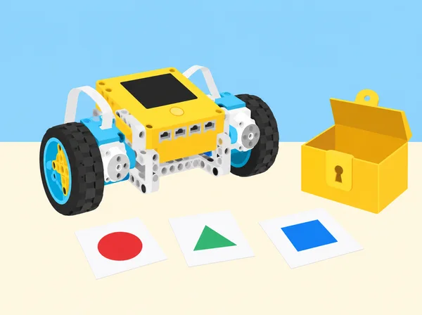

La classe dissenya una activitat de descoberta per a una mostra de tecnologia. Els visitants, sempre lliures de continuar o aturar-se, resolen una seqüència de pistes sobre una taula; el programa mostra si cada resposta compleix les regles i actualitza una puntuació compartida. Les variables conserven el resultat d’una partida, els operadors combinen requisits, i el SPIKE Prime dona respostes de llum, so o moviment curt. En les sessions centrals, la classe investiga com una condició composta pot simular una contrasenya i compara usabilitat, nombre de combinacions i accessibilitat. Aquesta situació adapta les cinc lliçons de la unitat 8 Compound Conditionals de LEGO Education Foundations of Physical Computing. “Obrir una caixa” i “eixir d’una sala” s’interpreten com a metàfores de joc en una maqueta: l’alumnat mai queda tancat, cap objecte valuós depén del prototip i no s’hi introdueixen dades o credencials reals.
i, o i no.Variable de puntuació: valor amb nom que s’inicialitza abans de la partida i s’actualitza segons una regla publicada. Condició simple: una expressió que és certa o falsa. Condició composta: dues o més condicions relacionades amb un operador lògic. Per exemple, “el color és blau i el botó ha sigut premut” exigeix ambdues coses; “el color és groc o verd” permet qualsevol dels casos, i en aquesta unitat l’OR és inclusiu. Seqüència: ordre de comprovacions que forma part de la regla. Restricció: requisit que limita disseny i comportament, com ara poder reiniciar o no usar contrasenyes personals.
La seguretat digital real depén de molts factors que no es modelen en el kit. Una seqüència de colors vista o enregistrada no és un secret segur; l’objectiu matemàtic és comprendre les regles i els compromisos entre facilitat d’ús i complexitat, no ensenyar a protegir comptes mitjançant un robot escolar.
Per equip: set SPIKE Prime 45678, dispositiu amb l’app SPIKE i hub carregat; base mòbil o model senzill amb sensor de color i sensor de distància si estan disponibles; targetes gruixudes de resposta; cartolina, cinta de paper, peces per a una capsa de maqueta que no tanque ni puga bloquejar-se, fulls de regles i diari d’enginyeria. Prepareu una pista de taula amb codis ficticis i un sistema de puntuació que no premie la rapidesa física ni penalitze errors d’accés. Verifiqueu abans quines lectures i botons admet la versió d’app del centre. Si falten sensors o les lectures varien, empreu targetes/observador com a entrada simulada i assenyaleu-ho explícitament. Cap llum o so ha de semblar una alarma d’emergència.
Feu una anàlisi prèvia de riscos amb l’alumnat: la maqueta queda oberta, la partida no té límit que obligue a córrer i tothom pot eixir de l’activitat en qualsevol moment. En lloc d’un qüestionari personal, recolliu comentaris anònims sobre llegibilitat i opcions de pista. Rols rotatius: responsable de regles, programació, muntatge/seguretat i observació d’usabilitat.
Activació: compareu jocs de taula, cartes, esports i videojocs; cada persona pot parlar d’un joc conegut o analitzar un joc neutre preparat per la docent. En grups, identifiqueu què el fa comprensible i com se sap que s’ha guanyat. Exploració: inventeu un joc de taula per a dues persones amb una fitxa que recorre una pista i targetes de situació. Definiu com es guanyen o perden punts, quants torns hi ha i quan acaba. Escriviu regles en passos numerats abans de tocar el codi; feu una ronda manual per detectar interpretacions diferents. Programació: creeu variables punts_jugador_a i punts_jugador_b, inicialitzeu-les a zero a l’inici de cada partida, canvieu de torn de manera explícita i feu una resposta de llum/so cada vegada que la puntuació canvia. Si el sensor o el model no és necessari per al joc, no l’afegiu només per fer-lo més complex. Prova i explicació: un segon equip juga només amb les regles escrites i anota cada desacord; compareu puntuació en paper i en el programa després de cada ronda. Reviseu una regla amb el feedback rebut. Evidències: regles finals, taula de traça d’almenys quatre torns, captura/esquema del programa i una nota sobre la inicialització de variables. Autoavaluació: vaig deixar clar com sumar, canviar de torn i començar de nou?
Activació: cada parella crea un codi fictici de tres xifres i prova a endevinar els nombres triats per l’altra persona; no s’anoten contrasenyes habituals, PIN personals o dades privades. Calculeu quantes combinacions hi ha per a un, dos i tres dígits si cada posició pot valdre 0–9, i parleu de per què augmentar opcions dificulta endevinar però també pot fer més incòmode recordar. Modelatge: sobre un full de decisions, assigneu una regla a una capsa de paper oberta: “la peça de joc rep el senyal d’obertura només quan s’ha triat la targeta de color correcte i el botó d’inici s’ha premut”. Completeu les quatre files de la taula de veritat (color correcte/incorrecte × botó premut/no premut). Exploració i codi: utilitzeu una entrada de color i un botó del hub o dues entrades simulades; feu que el programa responga de manera diferent a acceptació i rebuig i que permeta tornar a començar. Afegiu missatges clars; no exposeu mai un codi correcte en una llum que es puga interpretar com a protecció. Depuració: proveu deliberadament els quatre casos, llegiu cada fila abans d’executar i compareu resultat esperat/real. Afegiu el cas d’una lectura que el sensor no reconeix i decidiu si s’ha de repetir, demanar ajuda o cancel·lar. Tancament: què vol dir “més segur” en el model i què no pot demostrar una maqueta? Deseu taula de veritat, pseudocodi i registre d’errors.
Activació: reviseu per què algú voldria protegir informació o materials i qui podria quedar exclòs per una regla mal dissenyada. Amb targetes fictícies, compareu una sola comprovació amb dues comprovacions de tipus diferent —per exemple, una targeta de color i l’acció deliberada d’un botó— i representeu-les com a portes lògiques. Disseny: creeu un prototip de taula que autoritza l’avanç d’una fitxa de joc només si coincideixen dos senyals; el prototip pot donar un punt lluminós o fer moure una barrera de cartró molt lleugera que mai tanca res. Abans de construir, redacteu requisits, diagrama de flux, condicions i casos de prova; decidiu què passa amb una entrada tardana, incorrecta, repetida o absenta. Construcció/programació: combineu operadors booleans en el programa i proveu tant lògica encadenada com condició composta, segons el que admeta l’app. Etiqueteu comentaris amb el requisit corresponent i programeu una resposta de recuperació, no un bloqueig permanent. Usabilitat i trade-offs: un equip prova el prototip amb una guia accessible i comenta si entén què ha de fer i com rectificar; no es demana informació real. Reviseu el disseny: massa factors poden dificultar l’ús legítim tant com l’ús no desitjat, i més combinacions per si soles no fan un sistema segur. Documenteu quines proves recolzen la vostra afirmació i quines proves professionals faltarien.
Repte: cada equip crea un joc curt en una taula oberta que un altre equip resol amb pistes físiques, instruccions accessibles i una seqüència de respostes del SPIKE Prime. El nom “breakout” descriu el gènere de joc; ningú entra en una sala tancada i cap eixida física depén del programa. Empatia i ideació: feu una consulta breu i anònima sobre quins formats de pista resulten agradables (visual, tàctil, text, so opcional); identifiqueu alternatives per a qui no distingeix colors o prefereix no usar so. Trieu un problema fictici, com ordenar peces d’una exposició abans d’obrir-ne la capsa de cartó. Planificació: definiu tres restriccions mesurables: una acció de moviment segura, dues condicions que s’han de complir i un ordre de pistes; incloeu reinici i pista d’ajuda. Escriviu pseudocodi, esquema de connexions i una matriu amb camí correcte, un error per cada condició, ordre erroni, entrada no detectada i reinici. Construcció i iteració: creeu un mecanisme indicatiu amb peces mòbils de baixa energia o només llums/sons del hub; programeu una seqüència de respostes i variables de progrés. Proveu cada subcomponent aïllat abans del codi complet, recolliu els errors, canvieu una cosa per iteració i torneu a executar tota la matriu. Intercanvi: cada joc ha de ser resolt per almenys tres equips o tants com per obtindre feedback divers; si el temps no dona, feu una prova creuada i completeu la resta amb casos representats en paper. Les persones participants poden aturar-se sense perdre puntuació ni justificació. Cada equip revisa instruccions, nivell de dificultat, temps disponible sense compte enrere pressionant i accessibilitat; entrega una versió revisada i anota què ha canviat a partir de proves reals.
Activació: repasseu els jocs i localitzeu coneixements que apareixen en arquitectura i construcció, enginyeria, ciències i matemàtiques: mesura, estructura, forces, programació, dades, planificació i treball en equip. Classifiqueu imatges o targetes de professions, incloent arquitecta, electricista, lampista, fuster/a, enginyera biomèdica, tècnica de manteniment, estadístic/a, química/enginyer químic i operari/ària de construcció; eviteu associar oficis a un gènere o nivell d’estudis únic. Recerca: consulteu fonts públiques i actuals seleccionades per la docent per a descriure tasques, entorns, habilitats, formació i com cooperen diversos rols en un projecte. Cada equip tria dos perfils complementaris i elabora una fitxa de relació amb una evidència o font per afirmació. Modelatge: construïu amb peces una estructura o una mostra interactiva de maqueta, definiu-ne un requisit i incorporeu una regla booleana senzilla si aporta valor; no cal automatitzar la construcció per parlar de tecnologia. Comunicació: feu una presentació d’un minut que explique el problema, dos rols professionals, la decisió lògica usada i el que una maqueta no pot certificar. La reflexió individual sobre interessos professionals és privada i voluntària; es pot respondre sobre una professió investigada en lloc d’una aspiració personal.
Portafolis d’equip: regles del joc i nom triat, taula de puntuacions a mà/codi, taules de veritat, pseudocodi i diagrama, codi comentat, matriu de proves amb resultat esperat i real, fotografies només de models (mai d’alumnat sense autorització), registre d’iteracions, feedback anonimitzat d’usabilitat i fitxa professional amb fonts. Avalueu quatre dimensions amb descriptors: (1) condicions formalitzades sense ambigüitat; (2) variable inicialitzada i actualitzada en el torn correcte; (3) proves que cobreixen èxit, error, entrada absent i reinici; (4) explicació de limitacions i accessibilitat. En autoavaluació privada, puntueu de l’1 al 3 la cura de materials, gestió del temps i contribució; afegiu un exemple concret de col·laboració i una decisió canviada per les dades. La partida no determina la nota ni es fa classificació entre persones.
Les pistes tenen alternativa no cromàtica (paraula, forma o relleu), les instruccions s’ofereixen en text breu i esquema, i els efectes sonors són opcionals amb equivalent visual. Eviteu codis personals, recollida de credencials, dades d’identitat i enquestes sobre interessos que obliguen a revelar preferències. Els jocs se situen sobre una superfície, no bloquegen passadissos i no impliquen portes, panys, rutes d’evacuació ni espais reals. Poseu a prova el límit entre una regla pedagògica i una afirmació de seguretat: el SPIKE de l’activitat no autentica usuaris ni detecta intrusions. Atureu motors en fer canvis i manteniu peces menudes organitzades.
Adapta les cinc lliçons de la unitat 8 Compound Conditionals de LEGO Education Foundations of Physical Computing: Game with Variables, Compound Conditionals, Compounding Conditionals, Mini-Challenge: Break Out Room i Connecting to Careers: Architecture & Construction and Science, Technology, Engineering & Mathematics. Manté el joc de dos participants amb marcador, l’exploració de codis i combinacions, el disseny d’un dispositiu que interpreta més d’un factor, el repte de seqüència tipus breakout, la prova entre equips i la recerca de professions; canvia els models, codis, context i regles per una mostra escolar segura, oberta i accessible.